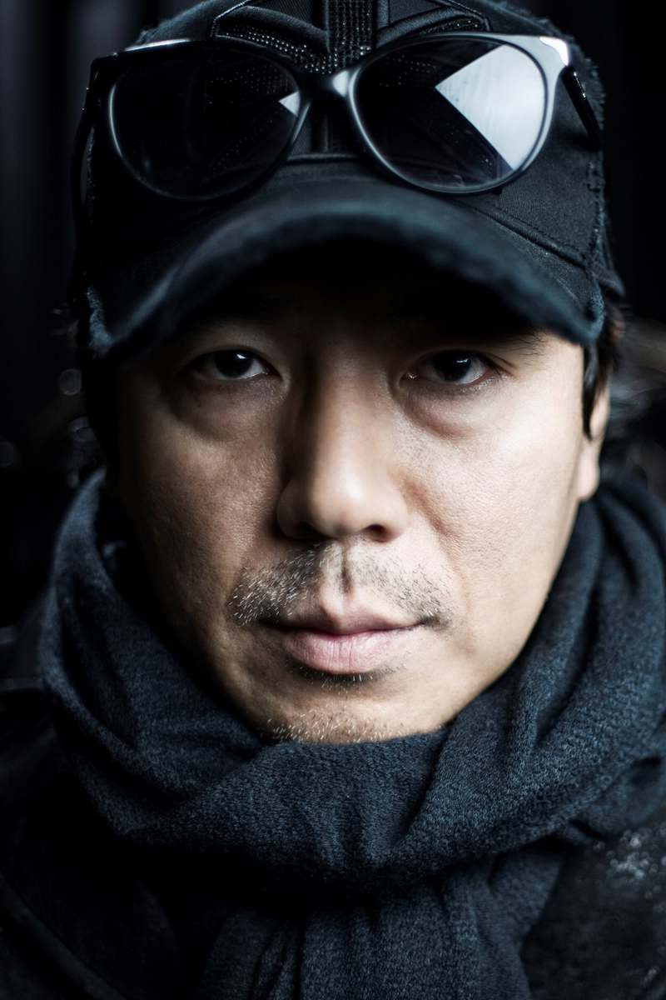
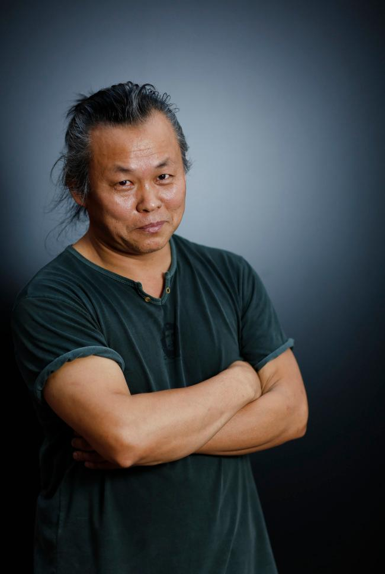
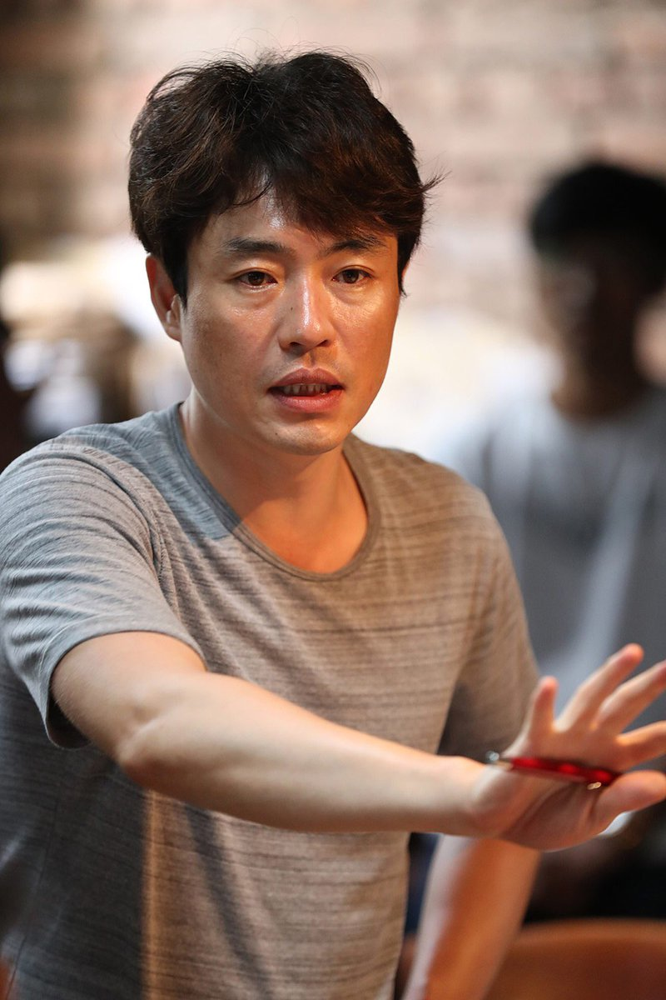

Премьера южнокорейской дорамы "Пиноккио" началась в ноябре 2014 года и закончилась в 2015. (20 серий) Названа так дорама по аналогии с итальянской сказкой Карло Коллоди. В центре дорамы два главных героя, которые с детства росли без родителей. Жили они на попечении одного сердобольного человека, который, приютив обездоленных детей, таким образом создал для них семью. Вместе ребята ходили в школу.
«Олдбой» стал вторым фильмом из трилогии о мести, в которую входят столь же экстремальные, визуально прекрасные и взрывные ленты «Сочувствие господину Месть»
Пон Джун Хо приобрел известность в России совсем недавно, после выхода социальной драмы «Паразиты», получившей главный приз Каннского кинофестиваля.
На Хон Джин начинал свой путь с короткометражных фильмов и более широкую известность получил только после выхода триллера «Преследователь»
Еще один из ведущих южнокорейских режиссеров Ким Чжи Ун начал карьеру, сняв черную комедию «Тихая семья», которая рассказывает историю родственников, скрывающих загадочные убийства в своем отеле.
Кан Джегю начинал карьеру в качестве сценариста малоизвестных драм «Что ж, давайте посмотрим иногда на небо», «Кто видел когти дракона?», «Дни роз».
На сегодняшний день у Ким Ки Дука в послужном списке уже двадцать шесть картин, среди которых превалируют мрачные драмы и триллеры. Начиная 1996 и вплоть до 2000
В конце 80-х и начале 90-х Им Квон Тэк делает упор на критический реализм и криминальную интригу. Эти мотивы нашли отражение в фильмах «Билет» Рекомендуем...
Рю Сын-ван начинал карьеру с короткометражных фильмов «Transmutated Head» и «Rumble», который принес ему награду «Лучший фильм» на Кинофестивале короткометражных фильмов в Пусане.
Хон Сан Су дебютировал как режиссер в возрасте тридцати пяти лет с драмой о судьбе четырех разных персонажей — «День, когда свинья упала в колодец». Рекомендуем...
Свой путь в большое кино Ли Чжун Ик начинал в качестве продюсера, хотя еще в 1993 году снял короткометражный фильм «Ребенок-полицейский», после чего не занимался режиссурой в течение десяти лет.
Один из пионеров корейской волны и главный поставщик романтических историй в местные кинотеатры начинал карьеру еще в конце восьмидесятых.
Пон Джун Хо приобрел известность в России совсем недавно, после выхода социальной драмы «Паразиты», получившей главный приз Каннского кинофестиваля.